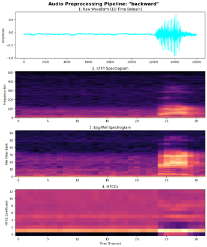
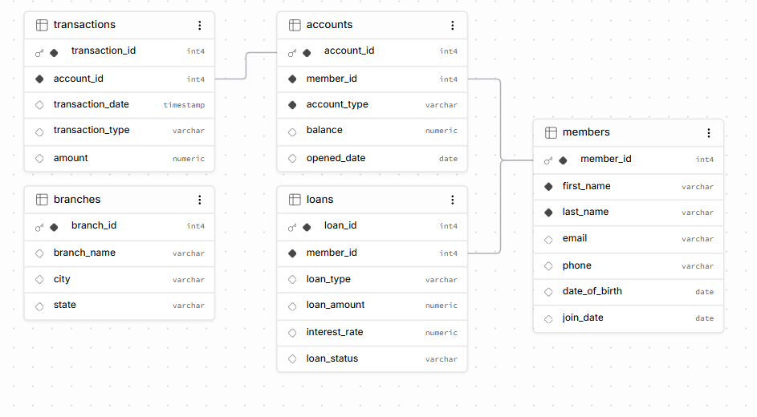
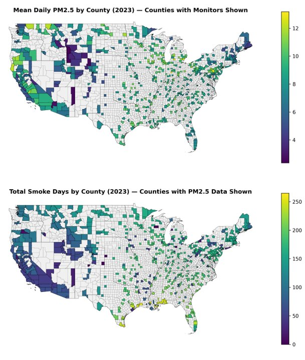
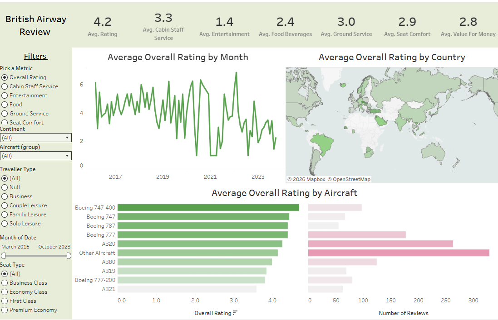

Designed and deployed a relational database schema for a credit union system using PostgreSQL and Supabase. Implemented structured tables, foreign key constraints, and relational schemas to manage financial transactions and member records.

Analyzed 2023 environmental and demographic datasets from the EPA, NOAA, and CDC across 635 US monitor sites. Evaluated statistical differences in air quality between smoke days and non-smoke days mapped against CDC Social Vulnerability Index categories.

Built and evaluated predictive statistical models on 2022–2023 NBA player biometric and performance metrics in R. Applied data wrangling to merge datasets and used RMSE evaluation to demonstrate that Random Forest outperformed Linear Regression.

Executed end-to-end data pipelines in Python using Pandas, Matplotlib, and Seaborn. Cleaned and aggregated multi-source sports datasets to discover underlying correlations between player efficiency ratings and contract values.

Performed Exploratory Data Analysis (EDA) on movie attributes to uncover financial and popularity drivers. Leveraged Python statistical visualization tools to prove key correlations between production budgets, user votes, and gross revenue.

Transformed raw, unstructured customer data into an analysis-ready state. Addressed data quality issues using Pandas by standardizing phone numbers, parsing addresses into distinct geographical metrics, and removing duplicate/null fields.

Designed an interactive Tableau business intelligence dashboard analyzing multi-year passenger ratings (2016–2023). Segmented sentiment metrics across cabin service, food quality, ground handling, and overall value for money.